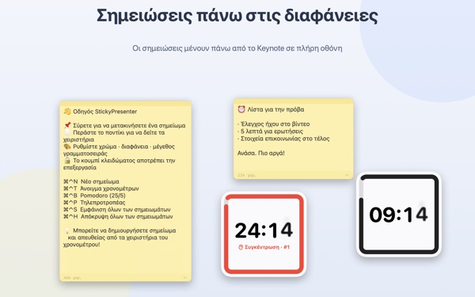
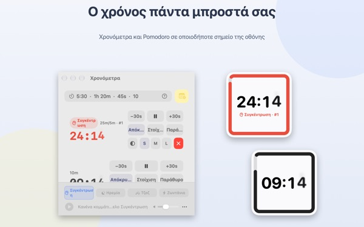
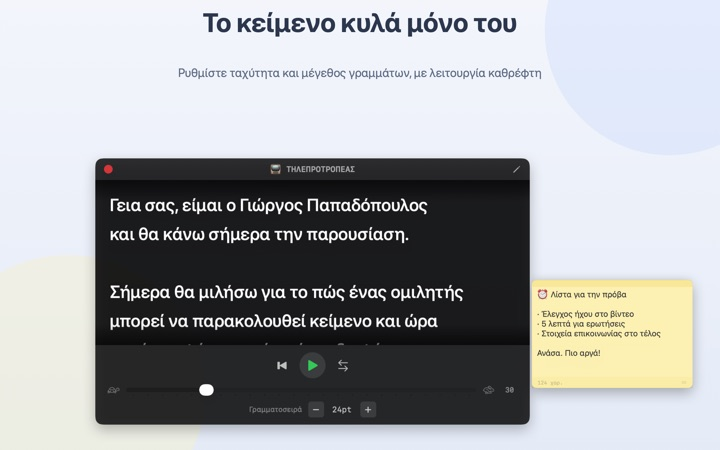
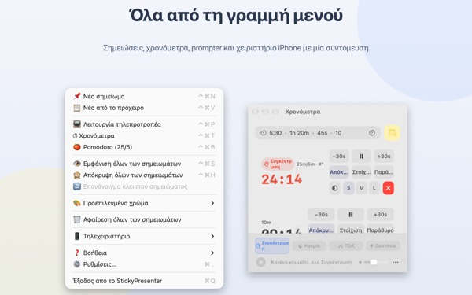

Το κείμενο και ο χρόνος σας
πάνω στη διαφάνεια
Βάλτε το Keynote σε πλήρη οθόνη και τα σημειώματα με το χρονόμετρο μένουν από πάνω. Δεν παίρνουν ποτέ την εστίαση από την εφαρμογή παρουσίασης, οπότε το τηλεχειριστήριο αλλάζει διαφάνειες κανονικά.
Όλες οι λειτουργίες είναι δωρεάν. Απαιτεί macOS 14 ή νεότερο.

Δοκιμάστε το πάνω σε μια διαφάνεια
Γράψτε έναν χρόνο όπως θα κάνατε στην εφαρμογή. Πατήστε 15s για να δείτε πώς σας ειδοποιεί το widget όταν ο χρόνος τελειώνει.
Πού βάζετε το κείμενο και το ρολόι όταν παρουσιάζετε;
Η προβολή παρουσιαστή θέλει δεύτερη οθόνη, και μια ματιά στο ρολόι χειρός το κοινό πάντα την προσέχει. Ίσως έχετε κολλήσει κάποτε ένα χαρτάκι στο λάπτοπ και το είδατε να πέφτει. Το StickyPresenter καρφιτσώνει το κείμενο και τον χρόνο που απομένει ακριβώς πάνω από τη διαφάνεια, εκεί που ήδη κοιτάτε.
Μια ματιά και ξέρετε πόσος χρόνος μένει
Ένα τετράγωνο widget στη γωνία δείχνει τον χρόνο που απομένει. Κοκκινίζει όταν πλησιάζει το τέλος και, όταν τελειώσει ο χρόνος, ηχεί και αναβοσβήνει το περίγραμμά του.
Γράψτε τον χρόνο όπως σας βολεύει, π.χ. 5:30 ή 1h 20m, ή 25/5 για ένα Pomodoro που εναλλάσσει συγκέντρωση και διάλειμμα. Ανοίξτε το χρονόμετρο σε δικό του παράθυρο για να μοιράζεστε μόνο αυτό μέσω κοινής χρήσης οθόνης ή AirPlay.

Διαβάστε το κείμενο κοιτώντας την κάμερα
Ο τηλεπροτροπέας κυλά το κείμενο με την ταχύτητα που ορίζετε και σταματά μόνος του στο τέλος. Αντιγράψτε το κείμενο, πατήστε ⌘⌃P και ανοίγει με αυτό.
Υπάρχει κατοπτρική λειτουργία για εξοπλισμό με ημιδιαφανές γυαλί, και η ταχύτητα με το μέγεθος γραμμάτων μένουν ίδια την επόμενη φορά.

Χωρίς να φύγετε από τη διαφάνεια
Λειτουργεί διακριτικά στη γραμμή μενού, χωρίς εικονίδιο στο Dock και χωρίς παράθυρα να προσέχετε. Συντομεύσεις όπως ⌘⌃N για νέο σημείωμα και ⌘⌃T για χρονόμετρα δουλεύουν ακόμη και με το Keynote σε πλήρη οθόνη.
Στη σκηνή, η δωρεάν εφαρμογή για iPhone Remote Controller for Sticky ξεκινά και σταματά το χρονόμετρο και μετακινεί το widget όταν κρύβει μια διαφάνεια.

Τρία βήματα για να ξεκινήσετε
- 1
Ανοίξτε την εφαρμογή
Στη γραμμή μενού εμφανίζεται ένα εικονίδιο σημειώματος και την πρώτη φορά ανοίγει ένας σύντομος οδηγός.
- 2
Βάλτε σημείωμα και χρονόμετρο
Αντιγράψτε το κείμενο και πατήστε
⌘⌃V, μετά γράψτε τη διάρκεια της ομιλίας στο πεδίο του χρονομέτρου. - 3
Περάστε σε πλήρη οθόνη
Το σημείωμα και το χρονόμετρο μένουν από πάνω.
Συντομεύσεις και μορφές χρόνου
- ⌘⌃N
- Νέο σημείωμα
- ⌘⌃V
- Νέο σημείωμα από το πρόχειρο
- ⌘⌃T
- Εμφάνιση ή απόκρυψη χρονομέτρων
- ⌘⌃B
- Έναρξη Pomodoro (25 λεπ. συγκέντρωση, 5 λεπ. διάλειμμα)
- ⌘⌃P
- Τηλεπροτροπέας
- ⌘⌃S · ⌘⌃H
- Εμφάνιση ή απόκρυψη όλων των σημειωμάτων
- 10
- Σκέτος αριθμός σημαίνει λεπτά (10 λεπ.)
- 5:30 · 1:15:00
- Λεπτά:δευτερόλεπτα, ώρες:λεπτά:δευτερόλεπτα
- 1h 20m · 45s
- Με μονάδες
- 25/5
- Συγκέντρωση/διάλειμμα επαναλαμβανόμενα μέχρι να σταματήσετε
Όλες οι συντομεύσεις χρησιμοποιούν μαζί Command (⌘) και Control (⌃) και δουλεύουν ενώ είστε σε άλλη εφαρμογή. Τα χρονόμετρα φτάνουν έως 99:59:59.
Συχνές ερωτήσεις
Είναι πραγματικά δωρεάν;
Ναι. Όλες οι λειτουργίες είναι δωρεάν, και η εφαρμογή για iPhone Remote Controller for Sticky είναι ξεχωριστή δωρεάν εφαρμογή. Αν σας βοηθά, μπορείτε να αφήσετε φιλοδώρημα στον προγραμματιστή από τις Ρυθμίσεις· δεν ξεκλειδώνει τίποτα.
Μπορώ να δείξω μόνο το χρονόμετρο στην κοινή χρήση ή κατοπτρισμό οθόνης;
Ναι. Με το κουμπί Παράθυρο στη γραμμή του χρονομέτρου το ανοίγετε ως κανονικό παράθυρο. Τότε εμφανίζεται στη λίστα παραθύρων της κοινής χρήσης οθόνης και του AirPlay, και μπορείτε να μοιραστείτε μόνο αυτό.
Έκρυψα ένα widget χρονομέτρου και δεν το βρίσκω.
Στο παράθυρο χρονομέτρων, περάστε τον δείκτη πάνω από τη γραμμή εκείνου του χρονομέτρου και η θέση του widget σημειώνεται με διακεκομμένη γραμμή. Πατήστε Στοίχιση για να το φέρετε δίπλα στο παράθυρο.
Έκλεισα κατά λάθος ένα σημείωμα.
Με το Επανάνοιγμα κλειστού σημειώματος στη γραμμή μενού επαναφέρετε οποιοδήποτε από τα τελευταία 20. Τα σημειώματα αποθηκεύονται καθώς γράφετε και επιστρέφουν στην ίδια θέση όταν ξανανοίξει η εφαρμογή.
Μια συντόμευση δεν δουλεύει.
Αν ο πίνακας συντομεύσεων του οδηγού τη δείχνει ως Χρησιμοποιείται από άλλη εφαρμογή, μια άλλη εφαρμογή την έπιασε πρώτη. Κλείστε εκείνη την εφαρμογή και θα ξαναδουλέψει. Δεν χρειάζεται άδεια Προσβασιμότητας.
Γιατί το θέμα Χαμαιλέοντας ζητά άδεια Εγγραφής οθόνης;
Ο Χαμαιλέοντας διαβάζει το χρώμα της οθόνης πίσω από το widget για να ταιριάξει μαζί του, και γι’ αυτό χρειάζεται την άδεια. Τίποτα δεν αποθηκεύεται ούτε στέλνεται. Χωρίς αυτήν, τα θέματα Συστήματος, Φωτεινό και Σκούρο δουλεύουν κανονικά.
Πώς προσθέτω μουσική υπόκρουση;
Διαλέξτε διάθεση (Συγκέντρωση, Ηρεμία, Τζαζ ή Ζωντάνια) στη μπάρα μουσικής στο κάτω μέρος του παραθύρου χρονομέτρων και η εφαρμογή φτιάχνει φάκελο για καθεμία. Βάλτε εκεί τα δικά σας κομμάτια και θα παίζουν με τη σειρά μαζί με το χρονόμετρο. Η εφαρμογή δεν περιέχει μουσική.
Το τηλεχειριστήριο στο iPhone δεν βρίσκει το Mac μου.
Ελέγξτε με τη σειρά: τρέχει το StickyPresenter στο Mac (εικονίδιο στη γραμμή μενού); είναι και οι δύο συσκευές στο ίδιο Wi‑Fi, όχι σε δίκτυο επισκεπτών ή δεδομένα κινητής; επιτρέπεται το Τοπικό δίκτυο στο Απόρρητο και ασφάλεια, σε iPhone και Mac; είναι κλειστό το VPN;
Το τηλεχειριστήριο λέει ότι ο κωδικός σύζευξης είναι λάθος.
Πληκτρολογήστε τον τετραψήφιο κωδικό που φαίνεται τώρα στο Τηλεχειριστήριο, στη γραμμή μενού του Mac. Αν πατήσατε Νέος κωδικός σύζευξης, ισχύει μόνο ο νέος. Μετά την πρώτη σύζευξη, συνδέεται μόλις ανοίξετε την εφαρμογή.
Μπορεί κάποιος άλλος να ελέγξει το χρονόμετρό μου;
Όχι χωρίς τον κωδικό σας. Το Mac δέχεται μόνο τηλεχειριστήρια που έδωσαν τον σωστό κωδικό, μέσω κρυπτογραφημένης άμεσης σύνδεσης στο τοπικό δίκτυο. Αν κάποιος είδε τον κωδικό, επιλέξτε Νέος κωδικός σύζευξης ή Διαγραφή συζευγμένων τηλεχειριστηρίων στο Τηλεχειριστήριο.
Πού αποθηκεύονται τα σημειώματα και τα κείμενά μου;
Μόνο σε αυτό το Mac. Χωρίς λογαριασμό, χωρίς διαφημίσεις, και τίποτα δεν βγαίνει στο διαδίκτυο εκτός από ανώνυμα στατιστικά χρήσης και τα σχόλια που επιλέγετε να στείλετε.
Ερωτήσεις, σφάλματα ή ιδέες; Γράψτε στο mizzking75@gmail.com.